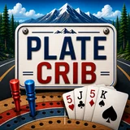

Plate Crib
Spot a plate. Play the hand.
Plate Crib brings a roadside twist to cribbage. Score the visible letters and numbers on a license plate, play classic cribbage against the CPU, or learn at your own pace in Practice Mode.
An iPhone app by TCQ Consulting LLC, founded by Timothy Connolly.
Why You'll Love It
- Turn visible license-plate characters into a quick cribbage score.
- Play classic cribbage against the CPU.
- Learn the game with a dedicated Practice Mode.
- Continue saved Classic and Practice games on your device.
- No account, location, camera, advertising, or tracking required.
Plate Crib questions
What are the different ways to play?
Plate Play scores visible letters and numbers you enter from a license plate. Classic mode lets you play cribbage against the CPU, and Practice Mode helps you learn at your own pace.
Does Plate Crib scan plates or identify vehicles?
No. You enter characters manually. The app does not request camera or location access and does not look up drivers, owners, or vehicles.
Can I continue a saved game?
Classic and Practice progress is saved locally on your device. Starting a new game replaces that mode’s saved game. This version has no account system or cloud synchronization.
Compatibility and availability
This page describes the app for iPhone. The version and minimum iOS requirement are listed above. Check the linked App Store listing for current availability, device compatibility, pricing, and updates.
Read the Plate Crib privacy policy or contact TCQ support.
Explore other TCQ apps
- Sum Of None — Number Logic Puzzle for iPhone.
- SnapStreak — Photo Scavenger Hunt Game.